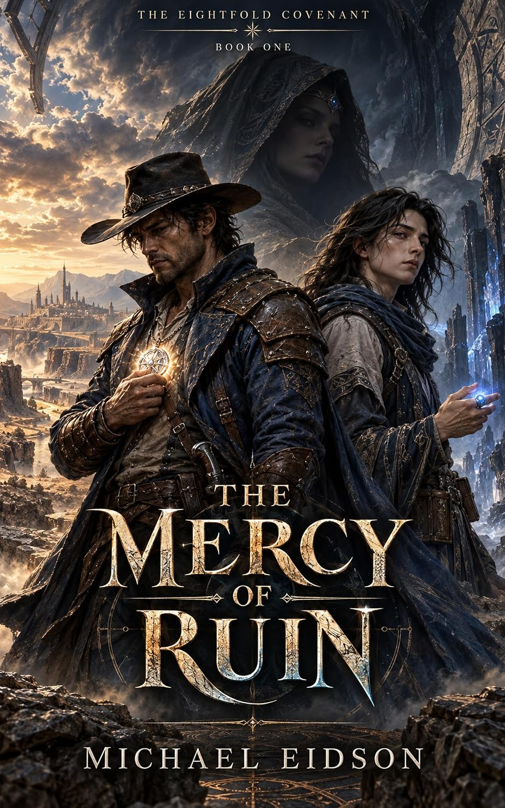

Valorra
The north and east
The military nation, governed from Brima Bastia by a Martial Tribunal. Its Rangers police a vast and difficult frontier.
Three nations share a fragile order. Feeling itself can be drawn into power. And eight lost pieces wait in the long shadow of history.
“In Eladria, emotion is not merely felt. It can be stored, spent, weaponized, and lost.”
Power is divided among three nations and one neutral city, each with its own answer to the question of how civilization should endure.
The north and east
The military nation, governed from Brima Bastia by a Martial Tribunal. Its Rangers police a vast and difficult frontier.
The west
A republic of scholars and registers. Its capital, Verimere, is home to the University and the Great Library.
The south
A nation of faith and pilgrimage, centered on gold-domed Divinae, where religious authority meets reform, trade, and the sea.
The center
The city that belongs to no nation and therefore to all three. Seat of the Tribunal, the Sovereignty Assembly, and the Emonantic Academy.
Beyond the Frostmyr
A valley of perpetual summer enclosed by a ring of ice. It is home to the Dreamers and the Elder Enclave—and far removed from the certainties of the three nations.
Emonari draw power from feeling. Each emotion belongs to one of eight currents, with its opposite across the center of the star.
A practitioner draws on present emotion, memory, or the feelings of those nearby.
Each time a remembered feeling is spent, it returns a little paler.
Every working is paid for in hunger, cold, pain, trembling—or worse.
Feeling, held.
Crystal capable of storing a single emotional current. It lights lamps, powers engines, serves as currency, and carries a far more dangerous purpose inside a charge.
Emotion, fired.
Firearms loaded with wellstone: terror can break resolve, amazement can stun, grief can empty strength, and rage can tear flesh.
A source, sealed.
The origin of the gift, closed two thousand years ago. An old saying survives: Take, and it gives. Give, and it takes.
Eight pieces. Scattered before the first Emonari died.
Eladriz Immenuae left behind eight objects whose history has become inseparable from myth. The covenant begins where those stories refuse to stay buried.
